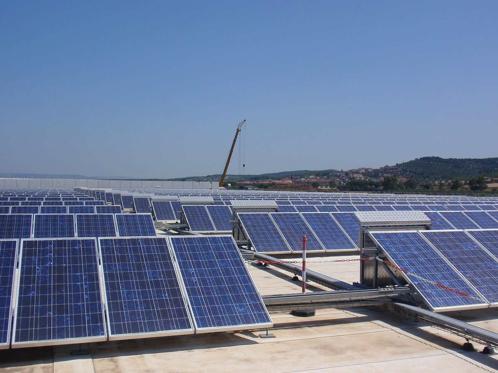

이탈리아 에너지협동조합 ènostra, 2029년까지 자체 발전 3배·조합원 2만8,000명 목표…새 발전 투자 450만 유로는 조합원 출자로

10월 말 조합원 웨비나서 2026~2029 전략계획 발표…고객 공급 전력 약 60GWh→100GWh, 출처 추적 전력 비중 20%→40%, '사회적기업' 전환도 검토
이탈리아 에너지협동조합 ènostra가 조합이 직접 만드는 재생에너지 전력을 2029년까지 5GWh에서 15GWh로 세 배 늘리고, 조합원을 약 2만 명에서 2만8,000명으로 키우는 2026~2029 전략계획을 10월 말 조합원 대상 웨비나에서 내놓았다. 재생에너지 생산과 공급을 함께 하는 이탈리아 첫 에너지협동조합으로 소개되는 ènostra는 고객에게 공급하는 전력을 2025년 말 약 60GWh에서 100GWh로 늘리고, 자체 설비·인증 협력사·소규모 생산자에게서 받아 출처를 추적할 수 있는 전력의 비중도 약 20%에서 40%로 높이기로 했다. 2029년까지 새 재생에너지 발전에 들일 450만 유로는 공동 설비에 돈을 대는 조합원을 늘려 마련하되 첫 2년에 투자를 몰아 계획 기간 안에 가동하겠다는 구상이며, 출자 등으로 조합 살림에 참여하는 조합원 비율 18%, 서비스를 2개 이상 쓰는 조합원 비율 10%(2026년 말 예상치 3%), 총회 투표 참여율 5%도 목표로 잡았다. 계획은 이사회·직원·과학기술위원회가 1년 넘게 함께 다듬었고 조합원 설문 응답 약 3,500건을 반영했으며, 사회적기업(impresa sociale) 전환과 성별·세대 균형 같은 포용 문제, 조직 모델 개편 세 가지는 따로 검토를 진행하고 있다. 잔루카 루제리(Gianluca Ruggieri) 회장은 모든 것이 빠르게 바뀌는 때에 중장기 방향과 일상 운영을 함께 붙잡으려는 계획이라고 설명했고, 키아라 브로지(Chiara Brogi) 부회장은 생산과 소비를 직접 잇는 관계가 인증서 못지않게 에너지의 질을 결정한다고 강조했다.
시민에너지 관점
조합원 8,000명을 더 모으고 450만 유로를 조합원 출자로 마련해 자체 발전을 세 배로 늘리겠다는 계획은, 시민이 돈을 모아 발전소를 짓고 그 전기를 되받아 쓰는 구조가 숫자로 된 4년 성장 목표를 세울 만큼 자리를 잡았다는 뜻이다. 유럽연합은 2018~2019년 재생에너지지침과 전력시장지침에서 재생에너지공동체와 시민에너지공동체를 법적 주체로 인정해, 이런 조직이 대형 사업자와 나란히 시장에 설 근거를 마련해 두었다. 협동조합이 가격과 디지털 경쟁을 앞세운 대형 사업자를 당해 낼 수 있겠느냐는 걱정도 있지만, ènostra가 내세우는 무기는 싼 전기가 아니라 누가 어디서 만든 전기인지 알 수 있다는 신뢰와 조합원의 출자·투표 참여다. 우리도 시민이 출자하고 결정에 참여하는 에너지협동조합이 발전과 공급을 함께 맡을 수 있도록, 소규모 전력 판매와 시민 출자를 가로막는 규제부터 손봐야 한다.
출처: Materia Rinnovabile 2026-11-05 Andrea Di Turi 원문 보기
イタリアのエネルギー協同組合ènostra、2029年までに自前の発電を3倍・組合員2万8,000人目標…新規発電投資450万ユーロは組合員の出資で
10月末の組合員向けウェビナーで2026~2029年戦略計画を発表…顧客への供給電力は約60GWh→100GWh、出所を追跡できる電力の比率は20%→40%、「社会的企業」への転換も検討
イタリアのエネルギー協同組合ènostraは、組合が自ら生み出す再生可能エネルギーの電力を2029年までに5GWhから15GWhへ3倍に増やし、組合員を約2万人から2万8,000人に拡大する2026~2029年の戦略計画を、10月末に組合員向けのウェビナーで示した。再生可能エネルギーの生産と供給をあわせて手がけるイタリア初のエネルギー協同組合として紹介されるènostraは、顧客への供給電力を2025年末の約60GWhから100GWhに増やし、自前の設備や認証を受けた提携先、小規模な発電者から調達して出所を追跡できる電力の比率も約20%から40%に引き上げる。2029年までに新たな再エネ発電に投じる450万ユーロは、共同設備に資金を出す組合員を増やしてまかない、最初の2年に投資を集中させて計画期間内に稼働させる構想で、出資などで組合の経営に参加する組合員の比率18%、2つ以上のサービスを利用する組合員の比率10%（2026年末の見込みは3%）、総会での投票参加率5%も目標に掲げた。計画は理事会・職員・科学技術委員会が1年以上かけてまとめ、組合員アンケートの回答約3,500件を反映しており、社会的企業（impresa sociale）への転換、ジェンダーや世代のバランスといった包摂の課題、組織モデルの見直しの3点は別途検討を進めている。ジャンルカ・ルッジェーリ（Gianluca Ruggieri）理事長は、あらゆることが急速に変わる中で中長期の方向と日々の運営をともに押さえるための計画だと説明し、キアラ・ブロージ（Chiara Brogi）副理事長は、生産と消費を直接結ぶ関係が証書と同じくらいエネルギーの質を左右すると強調した。
市民エネルギーの視点
組合員をさらに8,000人集め、450万ユーロを組合員の出資で用意して自前の発電を3倍にするという計画は、市民がお金を出し合って発電所を建て、その電気を自ら使う仕組みが、数字で示す4年間の成長目標を立てられるほど定着したことを意味する。欧州連合は2018~2019年の再生可能エネルギー指令と電力市場指令で再生可能エネルギー共同体と市民エネルギー共同体を法的な主体として認め、こうした組織が大手事業者と並んで市場に立つ根拠を整えている。価格やデジタル競争を前面に出す大手に協同組合が太刀打ちできるのかという懸念もあるが、ènostraが武器とするのは安い電気ではなく、誰がどこでつくった電気かがわかるという信頼と、組合員の出資・投票への参加だ。韓国でも、市民が出資して意思決定に加わるエネルギー協同組合が発電と供給をともに担えるよう、小規模な電力販売と市民出資を阻む規制から見直すべきだ。
出典: Materia Rinnovabile（マテリア・リンノヴァービレ） 2026-11-05 アンドレア・ディ・トゥーリ（Andrea Di Turi） 原文を読む
意大利能源合作社ènostra提出到2029年自有发电量增至3倍、社员达2万8,000人目标…450万欧元新增发电投资由社员出资筹集
10月底在面向社员的网络研讨会上发布2026~2029年战略计划…向客户供电由约60GWh增至100GWh，可追溯来源电力占比由20%升至40%，并研究转型为"社会企业"
意大利能源合作社ènostra于10月底在面向社员的网络研讨会上发布2026~2029年战略计划，提出到2029年将合作社自有可再生能源发电量从5GWh增至15GWh，即增加到3倍，并将社员人数从约2万人扩大到2万8,000人。被介绍为意大利首家同时从事可再生能源生产和供应的能源合作社，ènostra计划将向客户供应的电量从2025年底的约60GWh增至100GWh，并把来自自有设施、经认证的合作伙伴和小型发电者、可追溯来源的电力占比从约20%提高到40%。到2029年投入新增可再生能源发电的450万欧元，将通过增加为共有设施出资的社员来筹集，并把投资集中在头两年，以便在计划期内投入运行；计划还设定了以出资等方式参与合作社经营的社员比例达18%、使用两项以上服务的社员比例达10%（2026年底预计为3%）、社员大会投票参与率达5%等目标。该计划由理事会、员工和科学技术委员会历时一年多共同制定，吸纳了约3,500份社员问卷答复；转型为社会企业（impresa sociale）、性别与代际平衡等包容性问题以及组织模式调整这三项正在另行研究。理事长詹卢卡·鲁杰里（Gianluca Ruggieri）表示，这份计划是要在一切快速变化之时同时把握中长期方向和日常运营；副理事长基娅拉·布罗吉（Chiara Brogi）则强调，直接连接生产与消费的关系与证书同样决定着能源的品质。
市民能源视角
再吸纳8,000名社员、以社员出资筹集450万欧元、把自有发电量提高到3倍，这一计划意味着市民集资建电站、再使用其所发电力的模式，已经成熟到足以制定量化的四年增长目标。欧盟在2018~2019年的可再生能源指令和电力市场指令中，承认可再生能源社区和市民能源社区为法律主体，为这类组织与大型企业同场竞争提供了依据。有人担心合作社难以抗衡以价格和数字化竞争见长的大企业，但ènostra倚重的并非廉价电力，而是让人知道电力由谁、在何处生产的信任，以及社员在出资和投票上的参与。韩国也应从放宽阻碍小规模售电和市民出资的规制入手，让市民出资并参与决策的能源合作社能够同时承担发电和供电。
来源: 可再生材料（Materia Rinnovabile） 2026-11-05 安德烈亚·迪图里（Andrea Di Turi） 查看原文
Italian energy cooperative ènostra aims to triple its own generation and reach 28,000 members by 2029, with €4.5 million of new generation funded by members
2026-2029 strategic plan presented to members in a late-October webinar: energy supplied to customers to rise from about 60GWh to 100GWh, traceable-source share from 20% to 40%, conversion to a 'social enterprise' under study
Italian energy cooperative ènostra presented a 2026-2029 strategic plan to its members in a webinar at the end of October that would triple the renewable electricity the cooperative generates itself, from 5GWh to 15GWh by 2029, and grow its membership from almost 20,000 to 28,000. Described as Italy's first energy cooperative to both generate and supply renewable power, ènostra plans to increase the electricity it supplies to customers from about 60GWh at the end of 2025 to 100GWh, and to raise the share of power with a traceable source, from its own plants, certified partners and small producers, from about 20% to 40%. The €4.5 million it intends to invest in new renewable generation by 2029 is to be raised by bringing in more members who finance shared plants, with spending concentrated in the first two years so projects are running within the plan period; other targets include 18% of members taking an economic stake in the cooperative, 10% using at least two services (against an expected 3% at the end of 2026) and 5% voting at the general assembly. The plan was drawn up over more than a year by the board, staff and the scientific and technical committee, drawing on nearly 3,500 member survey responses, and three further questions are under separate review: conversion into a social enterprise (impresa sociale), inclusion issues such as gender and generational balance, and changes to the organisational model. President Gianluca Ruggieri said the plan is meant to hold medium- and long-term direction and day-to-day operations together at a time when everything is changing fast, while vice-president Chiara Brogi stressed that a direct link between production and consumption matters as much as certification in defining the quality of energy.
Citizen Energy View
A plan to sign up 8,000 more members and raise €4.5 million from them to triple the cooperative's own generation shows that the model of citizens pooling money to build power plants and then using their output has matured enough to set a four-year growth path in numbers. In its 2018-2019 renewable energy and electricity market directives, the European Union recognised renewable energy communities and citizen energy communities as legal actors, giving such organisations a basis to stand in the market alongside large companies. Some doubt that a cooperative can hold its own against big suppliers competing on price and digital services, but ènostra's strength is not cheap power; it is the trust that comes from knowing who generated the electricity and where, and members who invest and vote. Korea, too, should start by revising the rules that block small-scale electricity sales and citizen investment, so that energy cooperatives owned and governed by citizens can both generate and supply power.
Source: Materia Rinnovabile 2026-11-05 Andrea Di Turi Read the original